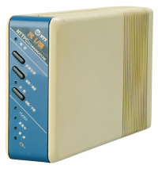
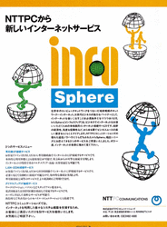
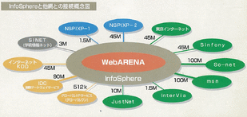

PR：パソコン通信からホスティングへ、日本のインターネット普及とともに歩んだNTTPCとWebARENA 39
縁の下の力持ち 部門より
NTTPCコミュニケーションズ（以下、NTTPC）のデータセンター/ホスティングサービス「WebARENA」がサービス開始から15周年を迎えた（WebARENA15周年キャンペーンページ）。NTTPCは早くからインターネット接続サービス「InfoSphere」を提供していたほか、それ以前にもパソコン通信サービスなどを提供していたのだが、現在は法人向けのサービスが中心ということで、あまり身近に感じられない人も多いだろう。しかし、多くのISP事業者がNTTPCの接続サービスをOEMの形で利用しているほか、まだ「ホスティング」という言葉が一般的でないインターネット黎明期に有名Webサイトを多数ハウジングしていたという実績もあるなど、NTTPCは見えないところで日本のインターネットの普及を支えていたのである。
今回はWebARENAの15周年ということで、NTTPCでパソコン通信やISPサービス、そしてデータセンターサービスなどに黎明期から関わってきたエンジニアや担当者に当時の話を伺った。インタビューに応じていただいたのは下記の3名だ（敬称略）。
- 伊藤琢巳（データセンタ事業部 担当部長）
- 薗正幸（データセンタ事業部 技術開発部 設備担当 担当課長）
- 井崎義浩（データセンタ事業部 サービス開発部 ハウジング担当 担当課長）
薗：1985年に日本電信電話公社が分社・民営化されたのですが、NTTPCはそれに伴いパソコン通信関連を扱う会社として設立され、1986年11月よりパソコン通信サービス「NTTPCネットワーク」を開始しました。電話交換機とデータパケット交換機のノウハウを使い、元郵政省推奨方式の自社開発モデム（「PC L/CU」）を使っていたのが特徴です。当時は一般的なモデムの通信速度が300～1200bpsなどで、またテキストデータのやり取りが中心だったのですが、このモデムは4800bpsでの通信が可能で、バイナリデータも安定してやりとりできました。
モデムが7万円前後、パソコン通信ソフトウェアが4万円前後、さらに通信料も今と比べると非常に高かったため、個人向けとしては苦戦していました。ただ、このサービスはもともと、パソコン通信のセンターに接続して会員同士のメールや掲示板を楽しむといった用途のサービスではなく、法人企業における1対Nのデータ・コンピューター通信を実現するためのサービスとして展開していたものです。上位レイヤーまでプロトコルを規定し、高品質で通信できるサービス仕様にすることによって、高額なコンピューターメーカーのホストコンピューターやワークステーションに、専用線を利用しなくてもパソコンと一般加入の電話回線で接続できました。そのため、今では1000店舗以上を展開する大手外食チェーンにおいて店舗の毎日の売り上げデータなどをサーバーに送信する用途や、テレビ局でのキー局と地方局間の編成データのやり取りなど、プライベート網的な用途に使われていました。

NTTPCネットワークで使用されていたモデム「PC L/CU」
――パソコン通信サービスはいつごろまで提供されていたのですか？
薗：だいたい2000年ごろまでです。設備の切り替えなどによって徐々にユーザーが離れていくという感じでした。
※NTTPCは1994年にNTTPCネットワークの後継的サービス「NTTメールサービス」（ITU-T X.400方式を採用した企業向けのメールサービス）を開始、こちらが2000年ごろまで稼働していたとのこと。
――NTTPCがインターネット関連に進出したのは、パソコン通信からの延長ということだったのでしょうか？
井崎：当時、「マルチメディア」という言葉が騒がれていました。パソコンの普及とともに、音声だけでなくテキスト、静止画、動画などさまざまなフォーマットの電子データが取り扱われるようになり、そうした電子データを通信の分野から取り扱うこともできる次世代の安価な通信手段を検討していました。当初は、フレームリレーのダイヤルアップ版みたいなものをイメージしていましたが、どうもアメリカでインターネットなるものが「マルチメディア」を実現しており、その「マルチメディア」を体感できるという話でした。そこで電気通信二種業者であるNTTPCでインターネット接続サービスをやりたいと手を挙げ、親会社のNTTに承認されたという次第です。
――1995年1月にインターネット接続サービス「InfoSphere」をスタートしていますが、当時の状況を教えてください。
薗：当時はまだダイヤルアップでアクセスポイントに接続してインターネットに接続するという形が主流で、アクセスポイントはNTTの局舎内に設置するのですが、（ISP事業者同士でアクセスポイント数を競うような状況もあって）各地にアクセスポイントをどんどん作っていたことを覚えています。インターネットとの接続は当初は二次プロバイダーとして開始しましたが、すぐに大手ISPと相互接続したり、国際ISPから海外経路を買ったり、また当時の大手ISP経路の相互補完としてインターネット経路を確保したりしていました。また、システムなどはすべて自社内で開発・構築していました。我々がサービスを開始したころは、その直前にベッコアメ・インターネットやリムネットなど、個人向けサービスも開始されインターネットブームが始まったころで、毎日日本中から法人・個人関わらずインターネットに関する問い合わせがあり、その対応で明け方まで仕事をして家に帰れないという日も何度も経験しました。また、インターネットで利用するシステムやサーバーと呼ばれるホストのOSは、サン・マイクロシステムズのSolaris（当時はまだSunOSという名称）を用いており、UNIXワークステーションといった高額な機材を用いて認証するシステムを作って使っていました。

InfoSphere開始当初の雑誌広告
{kind=link}
また、InfoSphereだけでなく、OEMの形でのサービス提供も多くありました。相手企業によっては認証やアクセスポイントなどのシステムも含めて提供していたため、よく見ると違うISPなのにアクセスポイントの電話番号が同じ、ということもよくありました（笑）。
個人向けサービスとしてのInfosphereは2002年に終了（NTTコミュニケーションズに営業譲渡しOCNに統合）したのですが、この回線OEMサービスは継続されており、現在も100社近くにサービスを提供しています。そのサービスがOEMかどうかはIPアドレスの登録者を見れば分かるのですが、逆にNTTPCユーザーとの区別がつかないため、当該IPアドレスから発信される迷惑メールが日常的に氾濫して社会に大きな影響を及ぼすようになったときはその対応が大変でした。外から見るとOEMのユーザーはNTTPCのユーザーに見えてしまうため、OP25Bによる迷惑メール対策が始まったときは対応が大変でした。
井崎：NTTPCのインターネットバックボーンは多数のISPが利用する環境でした。また、InfoSphereはほかのISPのネットワークと相互接続も多く行っていました。そのような状況の中、「InfoSphereは日本国内どこのネットワークからも近い」ということで、海外大手ソフトウェアベンダーの日本向けダウンロードサイトを運用するサーバーをInfoSphereの運用設備内に設置した、というのがハウジングサービスの始まりです。このころはまだ日本で「ハウジング」や「ホスティング」という言葉も一般的ではなかった時代でした。
伊藤：当時はまだネットワークの回線が遅く、（当時主流のWebブラウザであった）Netscapeのダウンロードに数十分かかるという時代だったのですが、（ファイルサイズが大きい）ソフトウェアのアップデートをそこから配布する、といったことをやっていました。
――WebARENAは日本のハウジングサービスの先駆けだったのですね。
井崎：弊社ではサーバセンター（データセンターを当時そう言っていた）への入館方法や物品の送付方法、緊急時の対応など運用ルール・マニュアルをWebサイトに掲載してお客さまに案内していたのですが、後から出た他社のデータセンターのWebサイトを見たら全く同じ内容・言葉が使われていて「そのままパクッたな」とと思ったりしたこともありました（笑）。つまり、当時インターネットデータセンターという言葉もありませんでしたが、ハウジングというサービスがどのような運用を行うといったことを国内では先駆けて体系を作った事業者だと自負しています。
――そのWebARENAについて、サービスの変遷について教えてください。
井崎：WebARENAという名称は、InfoSphereバックボーンが様々なネットワークと高速・広帯域の回線で接続されており、インターネットバックボーンに設置されたWebサーバーの配信環境を大きいコンサートホールに匹敵する情報配信環境にみたてて命名しました。どこからでも快適にセンターステージにアクセスできること、逆にコンテンツホルダーやインフォメーションプロバイダーがインターネットを全方位的に高速で安定した情報発信を行うことができるというコンセプトをARENAに重ねたのです。

当時のWebARENAにおける他ネットワークとの接続状況
{kind=link}
当初、WebARENAはいわゆるハウジングサービスである「WebARENA Gold」と、ホスティングサービスの「WebARENA Silver」の2種類がありました。SilverではWindows系サーバーを使用しており、当時まだインターネット接続のおまけ的付加サービスでプロバイダドメイン配下にユーザーディレクトリを作成し、スペースとして貸し出すWWWサーバーだったものから、さらに付加価値をつけて独自のお客さまドメインで運用ができるWWW専用の共用ホスティング仕様でサービスを開始しました。
※WebARENA Goldは10Mbps専用サービスで80万円/月、10Mbps共用サービスで30万円/月という価格設定（初期費用が10万円）。また、Silverは初期費用3万円、3万5,000円/月（月間1GBまでのファイル転送量込み）という価格設定で、ドメイン名取得申請代行も2万円/1件で行っていた。ちなみに現在は共用サーバーが1,980円/月～という価格設定である
その後、1999年にサービスをリニューアル、ハウジングサービス「WebARENA Gold」は「WebARENA Symphony」という名称になり、そのSymphonyに対して共用ホスティングサービス「WebARENA Suite」をリリースしました。お客様の独自ドメインで運用ができるWebサービスとメールサービスがホスティングで利用できることが名前の由来となっており、しかも数千円という低価格というのが画期的でした。というのも当時、Webやメールサーバーを構築するとなると専用線または、常時接続回線、プロバイダ料金で何万円も払い、サーバー機器で数十万円、さらに業者に構築を委託すると何十万円とかかっていたからです。
WebARENA Suiteでは、Linuxベースのサーバーを利用することで低価格化が可能になりました。使っていたのはラックマウント型ですらないPCサーバー。InfoSphereのオンラインサインアップ機能を流用し、コンパネから課金までNTTPC社員手作りのシステムでした。
※WebARENA Suiteの価格は個人向けが初期費用3,000円、月額料金が3,500円。法人向けは初期費用5,000円、月額料金は5,800円という価格設定だった
その後、Dedicatedサーバーを一台丸ごとレンタルする形でWebARENA Soloを提供開始し、VPSサービスの「SutiePRO」シリーズや個人でも利用しやすい「名づけてねっとのレンタルサーバー」など現在のラインアップに続いています。
――WebARENAサービスについて、今後の展望や、このような機能を実装する、という話で公にできるものはありますでしょうか。
伊藤：現時点で発表できる段階ではありませんが、今後「データセンター内ネットワークのマネジメント」についてはやっていきたいと思っています。「データセンターの仮想化」なども言われますが、データセンター内のネットワーク接続をソフトウェアでコントロールできるようにし、たとえば専用サーバーとVPSを仮想ネットワークで接続して連携させたり、またデータセンター外のたとえば社内ネットワークとデータセンター内のサーバーをうまく連携できるようにする、といったことですね。まだ具体的にどうなるか、ということは言えないのですが。また、特定の用途に特化したサービスも今後検討して行きたいと思っています。
――ありがとうございました。
※
NTTPCでの直近の動向としては、2012年3月21日に利用用途特化型のホスティングサービス「WebARENA メールホスティング」の提供を開始している。メールアカウント200、メーリングリスト100個までの中小規模クラスでのメールサーバー運用の負担軽減を狙ったサービスである。また、4月12日からは低価格VPSの「WebARENA VPSエントリー」の提供を開始する予定だ。来週はこの「WebARENA VPSエントリー」について紹介する。
懐かしい (スコア:2)
目黒からひと駅のデーターセンターに行ったなぁ。
Y2K 目視のために Ultra60 を前に年越ししたっけ。